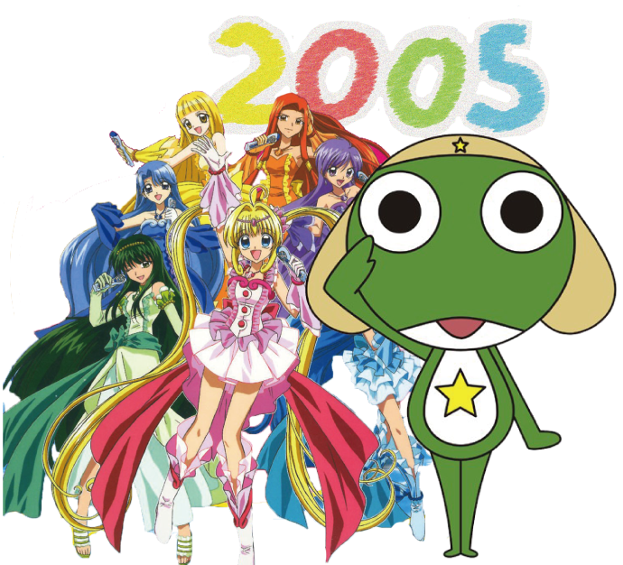

6월 15일 (제1연평해전)
- 서해에서 남북 경비정 간에 총격전이 벌어짐
6월 30일
- 경기도 화성군 소재 씨랜드 청소년수련원 화재 사건으로
유치원생 19명과 인솔교사 및 강사 4명 등 23명이 숨지고 5명이 부상
10월 30일
- 대한민국 인천광역시 소재 인현동 호프집 화재 참사가
발생하여 중고생을 비롯한 52명이 숨지고 71명이 부상

8월 15일
- 남북한 이산가족 200명이
서울과 평양에서 반세기만에 혈육 상봉
10월 13일
- 김대중 대통령이 노벨 평화상 수상자로 선정

1월 1일
- 축구 국가대표팀 감독에 거스 히딩크가 선임
9월 11일 (9·11 테러)
- 테러리스트들이 미국 여객기 4대를 납치해
뉴욕 맨해튼의 세계 무역 센터와 충돌시켰으며
워싱턴 D.C.의 미국 국방부, 펜실베이니아주에 추락시킴
이 사건으로 세계 무역 센터가 붕괴되고
펜타곤이 부분 붕괴되어 약 3,000여 명이 사망
5월 31일
- 대한민국과 일본에서 공동으로 2002년 FIFA 월드컵 개막
6월 29일 (제2차 연평해전)
-서해 해상에서 남북 간에 교전이 벌어져
남측에서 6명이 사망하고 18명이 부상

2월 18일
- 대구 지하철 화재 참사 발생으로 192명 사망, 151명 부상
12월 7일
- 이을용 선수가 축구경기 도중 중국선수
뒤통수를 손바닥으로 때려 퇴장 (을용타)

7월 18일 - 연쇄살인범 유영철 체포
4월 23일
- MBC 대표 예능 프로그램인
무한도전이 토요일의 한 코너로 첫 방송
6월 8일
- 수능 금지곡 1위 I'm your man의 "SS501" 데뷔
11월 6일
- 수능 금지곡 2위 쏘리쏘리의 "슈퍼주니어" 데뷔

5월 20일
- 신촌에서 선거운동을 하던 박ㄹ혜 한나라당 대표가
19시 20분경에 면도칼로 피습을 당함
8월 19일
- YG 최고의 아웃풋 "빅뱅"" 데뷔

2월 10일
- 수능 금지곡 3위 Tell ME의 "원더걸스" 데뷔
8월 5일
- 수능 금지곡 4위 Gee의 "소녀시대" 데뷔